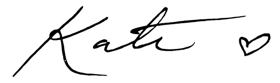

Strong. Passionate. Driven. Ambitious. Kate is thriving at work and has worked hard to get where she is. She is confident, in control and chic. She knows who she is and what she wants to achieve. She's going places and she will get there in style. Contemporary workwear jewellery from Araseli completes her professional look while expressing her individuality.
Alvord was born and raised in Los Angeles, California .Her father is a spanish financier and her mother, Nancy , is an interior decorator.Kate speaks English, Spanish and Italian. She studied theatre and opera before switching to design. She graduated from the Gemological Institute of California in 2013 before moving to New York as an individual designer in jewellery.
Our gemologists with diverse diamond industry experience and in depth knowledge of diamond grading, exercise discernment better than the industry standard in classifying and selecting our diamonds. So you can be assured that the sparkle of a Araseli diamond is at par with the best of the world.
Finding your perfect piece of diamond jewellery is an exhilarating and unique experience. Cut and crafted with utmost care, Araseli diamonds come with a certificate of authenticity that states the caratage, colour and clarity of the stone.No gemstone expresses human emotions more powerfully than a diamond and Araseli transforms these precious stones into breath-taking masterpieces, each unique and splendid in design.
